1) The mixture of 50g anhydrous THF and 0.01g ZnCl2 was heated to reflux in anhydrous conditions. 65g of acetylcloride was added dropwise, and reflux continued for 90min. Then the mixture is distilled to yield 76% of 4-clorobutylacetate (bp 78-79°C at 15mmHg; 90-91°/20mm). Without zinc chloride or with its larger quantities the yield is significally less.
Re-etherification with methanol in the presence of catalytic amounts of HCl or para-toluolsulfonic acid gives 4-clorobutanol-1 (bp 64-65°C @3mmHg) with yeld ~80%. Reaction must be conducted at temperature not exeeding 50°C, otherwise the THF will form again.
2) The HCl gas is passed into boiling THF until the temperature of the mixture reaches 103-105°C (about 5h is needed). Then the mixture is distilled in vacuo (at 15mmHg), after a lot of HCl is released from it. The yeld is 54-57%.
J.Am.Chem.Soc. 61, 2667, [1939]
J.Org.Chem. 1994,59,3738-3741
Under a nitrogen atmosphere, a mixture of phenylhydrazine hydrochloride (20 mmol) and 4-(N,N-dimethylamino)butanal dimethyl acetal (24 mmol) in 120 ml of 4% aqueous sulfuric acid was heated at reflux for 2 h. The product mixture was cooled to room temperature and treated with 15 ml of 30% aqueous NH4OH. The tryptamine was extracted into isopropylacetate or CH2Cl2. The organic layer was dried (Na2SO4) and concentrated under vacuum. The residue was either chromatographed or recrystallized to give the tryptamine.
| R | H | Me | iPr | F | Cl | Br | OMe |
| yield% | 86 | 89 | 91 | 100 | 82 | 93 | 85 |
| mp | 44-47 | 90-92 | 84-85 | 172-174 (HCl salt) |
197-198 (HCl salt) |
96-98 | 65-67 |
Comment: if using 1,3-dioxolane instead of dimethylacetale the yields are significally less.
In a 7 L Steel Hydrogenation vessel was dissolved 4-chlorobutyryl chloride (300 ml, 2.68 mol) in dry methyl acetate (3 L). 2,6-lutidine (360 ml, 3.09 mol) and 10% Pd/C (44.1 g) were added sequentially to the mixture. This mixture was shaken under hydrogen atmosphere (40 psi) at 23 C for 3.5 h. The product mixture was filtered through Solka Floc (100 g), and the cake was washed with dry methyl acetate (0.8 L). Methanol (0.6 L) was added directly to the filtrate, and the mixture was stirred for 15 min. Concentrated sulfuric acid (36 ml) was added dropwise over 30 min at 25-30 C with vigorous stirring. This solution was then stirred for 1 h, and the solid was filtered. The filtrate was washed with aqueous NaHCO3 (125 g diluted to 1.7 L) and 10% aqueous NaCl (0.55 L). The organic layer wsa dried (MgSO4), filtered, and concentrated in vacuo. The risidue was distilled to afford 310 g (76%) of pure 4-chlorobutanal dimethyl acetal: bp 50 C/8.5 mm Hg. This material was directly used in the next step.
4-chlorobutanal dimethyl acetal (1605 g, 10.5 mol) was dissolved id 40% aqueous dimethylamine (8L), and the solution was stirred at room temperature for 15 min. The reactin mixture was then warmed to 62 and stirred for 1 h. After the mixture was cooled, the product was extracted with CH2Cl2 (1x7.5L;1x5.5L). The combined organic layers were washed with 5% aqueous NaHCO3 (2L) and brine (100 g diluted to 1.5L). The organic layer was evaporated, and the residue was distilled to afford 1476 g (87%) of 4-(N,N-dimethylamino)butanal dimethyl acetal as a colorless liquid: bp 40 / 1 mm Hg (lit bp 53.5 / 5 mm Hg).
25g (0.25mole) of chromium trioxide (CrO3) is added to 46.0ml (0.28mole) of vigorously stirreed 6M HCl. After 3min the solution is cooled to 0°C and 19.7g (0.25mole) of pyridine is added dropwise in course of 10min with stirring. Pyridinium chlorochromate precipitates in form of orange needles, wich are quickly filtered on glass and dryed 1h over phosphorus pentaoxide in vacuo. The yeld is 45g (84%).
To the stirred mixture of 21.5g (0.25mole) of gamma-butyrolactone and 1g anhydrous zinc chloride 34g (0.29mole) of thionyl chloride is added dropwise in course of 30min. The mixture heats up and sulfur dioxide gas evolves. Stirring contines at 60-70°C until SO2 stops (about 30h is needed), and the product is distilled in vacuum of water pump. The yeld is 31.5g (89%) of colourless liquid bp. 70-71°C at 15mmHg.
TETRAHEDRON, EN, 50 (40) [1994] 11665-11692
8g of 4-chlorobutanol is added to the stirred mixture of 23g PCC in 200ml of dry DCM, and let the reaction proceed at room temperature for 3h. Then the solution is decanted from black precipitate, 100ml of ether is added and the mixture is filtered through aluminium oxide. The light yellow filtrate is concentrated and aldehyde distilled in vacuo.
Comment: 110g of clorobutanol gave 72g of aldehyde (yeld 60%).